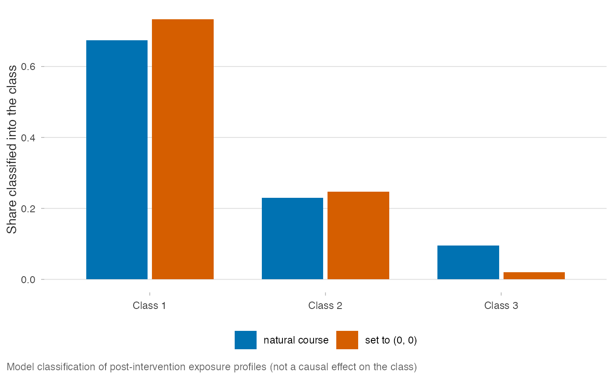

Post-intervention classification shares of an exposure latent class model
intervene_shares.RdHow would a latent class model of the exposures classify the exposure profiles that a hypothetical intervention produces? \(\pi_k^g = n^{-1}\sum_i \sum_s q_g(s \mid A_{S,i}) P(C = k \mid A_S = s, A_{rest,i}, X_i)\), reported for \(g_1\) and \(g_0\) (natural course: the mean posterior class probabilities) with \(\Delta_k = \pi_k^{g_1} - \pi_k^{g_0}\).
Arguments
- data
A data frame.
- exposures
The binary exposure columns (tidyselect, e.g.
ace1:ace8; 0/1, logical or two-level factors).- intervene
The exposures that are intervened on, selected among
exposures(tidyselect; 1 to 6 columns). Their order is the order of thesetto()values.- confounders
Confounder columns (tidyselect; factors are dummy-coded), or
NULL. Columns that are the outcome or exposures are dropped with a warning.- g1, g0
Interventions compared (
setto(),shift(),natural());g0defaults to the natural course.- K
Number of latent classes of the exposure model, fitted in Julia with the confounders as covariates. Alternatively give
model.- model
A fitted
latentmixtures::lca()model of theexposures(in the same order) with the confounders ascovariates, fitted to the same (complete) rows.- lca_uncertainty
"bootstrap"(default) or"none"(see Details).- B
Bootstrap replicates (class-model bootstrap, and g-formula standard errors).
- starts
EM starts of the class model,
c(stage 1, stage 2).- boot_starts
Starts of each bootstrap refit of the class model:
c(n1, n2)random starts (defaultc(30, 6), with which the simulation coverage of the LatentClassCausal.jl documentation was obtained) or"warm"(one EM run from the full-sample estimates, about 5 times faster but with too small standard errors when classes are weakly separated; for quick exploration only).- seed
Random seed (folds and bootstrap).
Value
An object of class class_shares_result: pi1, pi0, delta, se,
se_pi1, se_pi0 (one entry per class), se_method ("bootstrap" or
"conditional"), B, converged, profile.
Details
In the latent class model the class causes the exposures, so intervening on exposures
does not change anybody's class: \(\Delta_k\) is not a causal effect on \(C\), it
is the shift in the model's classification of post-intervention profiles. It is the
quantity that drives the bias of intervene_effect() when the class also affects the
outcome directly (intervene_latent_sensitivity()). No outcome is needed. Standard errors come
from a bootstrap refitting the class model by default; with lca_uncertainty = "none"
they treat the class model as known and are much too small (coverage about 50% in the
simulation on the documentation page).
How to use
Fit the class model of all exposures with the confounders as covariates,
mA <- latentmixtures::lca(data, ace1:ace8, K = 3, covariates = c(...)), and check its convergence (or giveKto fit it here).Select the exposures, the intervened ones and the intervention as for
intervene_effect(); no outcome is needed.Run
intervene_shares(data, exposures, intervene, confounders, g1 = ..., model = mA)and keep the default bootstrap standard errors for anything you report.Report \(\Delta_k\) as the change in how the model would classify the post-intervention profiles, not as a causal change of class membership.
Use \(\Delta_k\) to choose the
targetclass ofintervene_latent_sensitivity(). Seevignette("function-guide").
Examples
# \donttest{
data(ace_study)
# Question: if abuse and neglect were prevented, how would a 3-class model of the eight
# ACEs classify the resulting profiles? (descriptive; not a causal change of class)
mA <- latentmixtures::lca(ace_study, ace1:ace8, K = 3, covariates = c(age, female, parent_edu))
#> Starting Julia ...
sh <- intervene_shares(ace_study, exposures = ace1:ace8, intervene = c(ace1, ace2),
confounders = c(age, female, parent_edu), g1 = setto(c(0, 0)),
model = mA, B = 50) # B = 200 (default) for a paper
#> class-model bootstrap: 50 replicates on 4 thread(s)…
#> bootstrap 5/50 (10%), about 44 s left
#> bootstrap 10/50 (20%), about 31 s left
#> bootstrap 15/50 (30%), about 21 s left
#> bootstrap 20/50 (40%), about 17 s left
#> bootstrap 25/50 (50%), about 13 s left
#> bootstrap 30/50 (60%), about 11 s left
#> bootstrap 35/50 (70%), about 9 s left
#> bootstrap 40/50 (80%), about 6 s left
#> bootstrap 45/50 (90%), about 3 s left
#> bootstrap 50/50 (100%), done in 29 s
sh
#> ▸ Post-intervention classification shares (latent class model of all exposures)
#> g1: set to (0, 0)
#> g0: natural course
#> N = 2500, K = 3
#>
#> ──────────────────────────────────────────────────────────
#> pi_k^g1 pi_k^g0 Δ SE 95% CI
#> ──────────────────────────────────────────────────────────
#> Class 1 0.733 0.674 0.058 0.006 [0.047, 0.070]
#> Class 2 0.247 0.230 0.017 0.022 [−0.026, 0.060]
#> Class 3 0.020 0.096 −0.075 0.022 [−0.118, −0.033]
#> ──────────────────────────────────────────────────────────
#>
#> Shares of the model's classification of post-intervention profiles; not a causal effect
#> on the latent class (the class generates the exposures).
#> SE: bootstrap (50 replicates, class model refitted)
# pi_k^g0 are the class sizes (0.674, 0.230, 0.096); after prevention only 2.0\% of the
# profiles would be classified as high adversity (Delta_3 = -0.075), most moving to the
# low-adversity class (Delta_1 = +0.058). SEs are bootstrap (class model refitted).
which.max(sh$pi0 - sh$pi1) # class 3: the target class for intervene_latent_sensitivity()
#> [1] 3
autoplot(sh)

# }